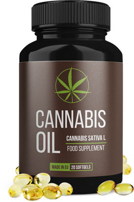

- Curăță și întărește
pereții vaselor de sânge - Normalizează
nivelul de colesterol - Previne
oscilațiile presiunii - Protejează împotriva atacurilor de cord și a accidentelor vascular-cerebrale
COMANDAȚI CU O REDUCERE DE 50%
În timpul funcționării normale a organismului, inima conduce sângele prin toate vasele, furnizând nutrienți și oxigen către celule. Dacă arterele își pierd elasticitatea sau se înfundă, inima începe să lucreze mai mult, tonul vaselor crește și diametrul lor se îngustează, ceea ce duce la tensiune ridicată. Debutul hipertensiunii este cauzat de tulburări ale sistemului nervos vegetativ și central, care sunt strâns asociate cu emoțiile. De aceia, atunci când persoana retrăiește, tensiunea arterială se ridică.
După 60 de ani, dezvoltarea hipertensiunii arteriale este asociată cu apariția aterosclerozei (boală arterială cronică), când plăcile de colesterol blochează fluxul sanguin normal. În acest caz, presiunea superioară a pacientului poate crește până la 170 mmHg, iar cea inferioară trebuie să rămână sub 90 mm Hg.
 Ecaterina Verdeș, 61 ani
Ecaterina Verdeș, 61 ani
 La necesitate,cursul poate fi repetat
La necesitate,cursul poate fi repetat